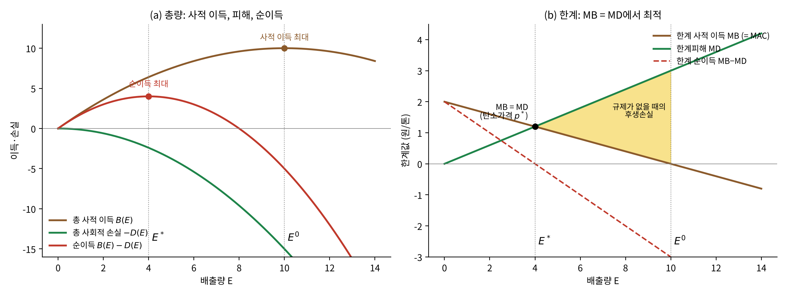
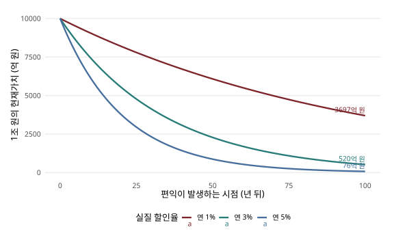

7 할인과 비용편익 분석
들어가며: 넷제로가 최선인가?
넷제로(net zero)란 대기로 내보내는 온실가스의 양과, 숲·탄소포집·저장 같은 흡수원이 빼내는 양을 같게 만들어 순배출을 0으로 하는 목표다. IPCC(2018)의 1.5°C 특별보고서는 온난화를 1.5°C로 제한하려면 전 세계 CO₂ 순배출을 2030년까지 2010년 대비 약 45% 줄이고 2050년경 넷제로에 도달해야 한다고 평가했다. 세계는 이미 약 1.1°C 더워졌고, 지금 추세라면 금세기 안에 3°C 가까이 오르는 경로에 있다.
과학자들은 넷제로가 필요하다고 말한다. 그렇다면 경제학자로서 우리는 2050 넷제로를 지지해야 할까? 아니면 다른 답이 나올까? 이 장은 이 질문에 답하기 위한 도구를 마련한다.
| 앞 장들의 재료 | 이 장의 작업 |
|---|---|
| 5장: 감축의 편익표 = 탄소의 사회적 비용(SCC) | I. 비용-편익의 틀: MB = MD |
| 6장: 감축의 비용표 = 한계감축비용(MAC) | II. 할인: 시점이 다른 값의 비교 |
| III. 할인율과 SCC: 스턴 vs. 노드하우스 | |
| IV. 최적 기후정책: 얼마나, 언제 줄일까 |
앞의 두 장은 가격표를 하나씩 만들었다. 한 톤 줄일 때의 편익(SCC)과 한 톤 줄일 때의 비용(MAC)이다. 이 장은 둘을 같은 시점의 값으로 맞추어(할인) 한 그림 위에서 만나게 한다. 이어서 8장에서는 그 가격을 실제로 어떻게 매길지(정책수단)를, 9장에서는 불확실성이 있을 때 결론이 어떻게 바뀌는지를 다룬다.
경제학자의 질문: 무엇을 최대화하는가
넷제로가 최적인가에 대한 답은 목표가 무엇이냐에 달려 있다. 경제학자는 효율성에 초점을 둔다. 자원을 효율적으로 배분해 사회의 후생을 최대화하는 것이다. 실증 분석에서는 일정 기간에 걸친 할인된 순편익(discounted net benefits)을 최대화하는 결과를 찾는다. 이를 위해서는 감축의 편익과 비용을 모두 알아야 한다.
이 장에서 쓰는 용어를 정리해 두자.
- 감축의 편익 = 감축으로 회피한 피해. 한 톤 기준으로는 SCC(5장)다.
- 감축의 비용 = 감축비용. 한 톤 기준으로는 MAC(6장)다.
- 같은 관계를 배출의 관점에서 쓰면, 배출의 편익 \(B(E)\)는 배출을 줄이면 포기하게 되는 것, 즉 감축비용이다.
정태적 비용-편익 분석: 최적 배출
피해는 저량에서 온다
온실가스는 저량 오염물질(stock pollutant)이다. 경제에 주는 피해는 그해의 배출량(유량)이 아니라 대기 중에 쌓인 양(저량)에 달려 있다(1장의 욕조 비유). 저량은 배출에서 대기 중 분해·흡수분을 뺀 것이 누적된 양이다. 피해함수는 온실가스가 만드는 외부효과, 즉 사회가 보상 없이 떠안는 공공악재(public bad)를 나타내며, 5장의 가치평가를 통해 전 세계의 모든 피해를 하나의 화폐 가치로 담는다.
간단한 교육용 관계식은 \(M_{t+1}=(1-\delta)M_t+E_t\)다. 여기서 \(M_t\)는 대기 중 저량, \(E_t\)는 배출, \(\delta\)는 자연 제거율이다. 이 식은 자연 제거율이 일정한 하나의 저장고를 가정한다. 실제 CO₂는 서로 다른 시간척도의 여러 과정을 거치므로 하나의 일정한 수명으로 설명할 수 없다. 이 저량이라는 성질 때문에 오늘의 배출은 수십, 수백 년 동안 피해를 낳는다. 그래서 뒤에서 할인이 필요해진다. 오늘 한 톤을 줄이는 편익은 오늘의 피해 감소가 아니라 그 한 톤이 앞으로 만들었을 미래 피해 감소의 전체다.
최적 배출: 순편익의 최대화
먼저 시간을 무시한 정태적 분석에서 시작하자. 비용-편익 분석은 최선의 행동을 찾는다. 탄소세처럼 행동이 연속적인 값을 가질 수 있다면 순편익을 최대화하면 된다.
\[\max_{E}\; G = B(E) - D(E)\]
여기서 \(G\)는 순이득(후생), \(E\)는 배출, \(B\)는 배출의 편익, \(D\)는 배출의 피해다. 1계 조건은
\[\frac{\partial G}{\partial E}=0 \;\Longleftrightarrow\; \underbrace{\frac{\partial D}{\partial E}}_{\text{한계피해 MD}} \;=\; \underbrace{\frac{\partial B}{\partial E}}_{\text{배출의 한계편익 MB = MAC}}\]
이다. 배출의 한계편익(= 한 톤 더 줄일 때의 비용)이 배출의 한계피해(= 한 톤 더 줄일 때의 편익)와 같아지는 곳이 최적이다. 감축량 \(A=E_0-E\)로 쓰면 같은 조건이 \(\mathrm{MAC}(A^*)=\mathrm{MD}(E_0-A^*)\)가 된다.

그림 7.1 를 차례로 읽어 보자.
(a) 총량. 갈색 곡선은 배출로 얻는 총 사적 이득이다. 배출을 늘리면 처음에는 이득이 늘지만 일정 수준 이후에는 줄어든다. 이득이 무한히 늘어난다면 무한히 배출하는 것이 최적일 텐데, 그것은 비현실적이다. 난방은 쾌적한 온도까지만, 이동은 필요한 곳까지만 하면 된다. 규제가 없을 때 배출자는 피해를 고려하지 않으므로, 총 사적 이득이 가장 큰 \(E^0\)까지 배출한다. 이는 4장의 외부효과와 같은 논리다. 초록 곡선은 피해(마이너스로 표시)이고, 빨간 곡선은 둘을 합한 순이득이다. 순이득이 가장 큰 \(E^*\)가 사회적 최적 배출량이며, 규제가 없을 때의 \(E^0\)보다 왼쪽에 있다. 그러나 \(E^*\)는 0이 아니다.
(b) 한계. 오른쪽 그림은 왼쪽 곡선들의 기울기, 즉 한계값이다. 왼쪽 빨간 곡선의 최대점(기울기 = 0)은 오른쪽 빨간 점선이 0이 되는 점이고, 이 점에서 갈색(한계 사적 이득)과 초록(한계피해) 선이 교차한다. 즉 한계 순이득 = 0 ⇔ MB = MD다. 규제가 없으면 \(E^0\)까지 배출해 노란 삼각형만큼의 후생손실이 생긴다. 이 교차점의 높이만큼 탄소에 가격 \(p^*\)를 매기면 배출자는 스스로 \(E^*\)까지 배출을 줄인다. 5장의 SCC(MD)와 6장의 MAC가 바로 이 그림의 두 곡선이다.
이 그림에서 비용-편익 분석의 두 가지 함의가 나온다.
- 첫 감축은 비용이 작고 편익이 크다. 따라서 상당한 감축이 필요하다.
- 마지막 감축은 비용이 크고 편익이 작다. 따라서 배출을 완전히 없애는 것은 비효율적일 수 있다.
이 조건은 내부해를 설명한다. 허용 범위의 끝에서 순편익이 최대가 되면 두 한계값이 같지 않아도 최적일 수 있다(3장 계산 예제 3.5). 또 현실의 기후피해는 누적 배출에 따라 여러 시점에 발생하므로, 한 해의 비용과 한 해의 피해만 비교해서는 충분하지 않다. 이 문제는 뒤의 동태적 분석에서 다룬다.
현재가치와 할인
시간이 들어오면: 시점이 다른 비용과 편익
기후경제학자 톨(Richard Tol)은 기후변화를 걱정한다는 것은 “먼 미래, 먼 나라, 낮은 확률”을 걱정하는 것이라고 표현했다. 기후변화는 장기적이고, 전 지구적이며, 불확실한 문제다. 이 장은 그 가운데 ’장기’를 다룬다. 지역 간 형평성과 불확실성은 뒤의 장들에서 다룬다.
문제는 서로 다른 시점에 발생하는 비용과 편익을 어떻게 비교하느냐다. 오늘 CO₂를 줄이는 비용과 수십 년 뒤에 나타나는 편익(회피한 피해) 가운데 어떤 비용이 어떤 편익만큼의 값어치가 있을까? 서로 다른 시점의 금액을 공통된 기준으로 바꾸는 작업이 할인(discounting)이다. 미래를 할인한다는 말은 미래가 중요하지 않다는 선언이 아니다. 시간에 따른 자원의 가치 차이를 어떤 방식으로 평가할지 명시하는 일이다.
복리와 할인
오늘 100만 원을 연 3%로 운용하면 1년 뒤 103만 원이 된다. 반대로 1년 뒤의 103만 원은 같은 비교 기준에서 오늘 100만 원의 가치다. 할인은 복리 계산을 거꾸로 하는 것이다. \(t\)년 뒤의 금액 \(X_t\)의 현재가치는
\[ PV(X_t)=\frac{X_t}{(1+r)^t} \]
이다. \(r\)은 기간당 할인율이며, 연간 금액에는 연간 할인율을 사용한다. 연도마다 할인율이 다르면 분모를 \((1+r_1)(1+r_2)\cdots(1+r_t)\)로 바꾼다.
비용 \(C_t\)와 편익 \(B_t\)를 합쳐 정책의 순현재가치(net present value, NPV)를 계산하면
\[ NPV=\sum_{t=0}^{H}\frac{B_t-C_t}{(1+r)^t} \]
가 된다. NPV가 양수이면 그 비교 기준에서 편익이 비용보다 크다. 서로 양립할 수 없는 여러 대안 가운데서는 같은 기준선과 범위에서 계산한 NPV를 비교해야 한다. “편익이 비용보다 크다”는 조건과 “가능한 대안 가운데 가장 좋다”는 조건은 다르다(3장의 칼도-힉스 기준).

실질금액과 명목금액
명목금액은 해당 시점의 가격으로 표시한 금액이고, 실질금액은 물가 변화를 제거하여 특정 기준연도의 구매력으로 표시한 금액이다. 실질금액에는 실질 할인율, 명목금액에는 명목 할인율을 사용해야 한다.
명목금리 \(i\), 실질금리 \(r\), 물가상승률 \(\pi\)의 관계는 \((1+i)=(1+r)(1+\pi)\)다. 낮은 금리에서는 \(r\approx i-\pi\)로 근사할 수 있다. 이미 물가를 제거한 피해액에 높은 명목금리를 적용하면 미래 피해를 지나치게 작게 평가한다.
분석기간과 말기 가치
분석을 특정 연도 \(H\)에서 끝낼 때에는 그 이후의 편익과 비용을 어떻게 처리했는지 밝혀야 한다. 이후의 순편익을 0으로 가정할 수도 있고, 이후 흐름의 가치를 말기 가치로 포함할 수도 있다. 두 방식은 서로 다른 가정이다.
예를 들어 180년 뒤의 할인계수는 연 1%에서 약 0.167, 3%에서 약 0.0049다. 할인율이 낮거나 미래 피해가 커지면 먼 미래의 기여도 무시하기 어렵다. “충분히 먼 미래이므로 0”은 계산 결과를 확인해야 하는 판단이지, 할인 자체의 정의가 아니다.
동태적 비용-편익 분석
이제 시간을 넣어 앞의 최적화 문제를 다시 쓰자. 기후변화는 동태적 문제다. 오늘의 배출이 앞으로 오랫동안 피해를 낳는다.
\[\max_{E_0,E_1,\ldots}\; \sum_t \frac{G_t}{(1+r)^t} = \sum_t \frac{B(E_t)-D(E_t,E_{t-1},\ldots,E_0)}{(1+r)^t}\]
배출의 편익은 그해에만 생기지만, 피해는 그때까지의 모든 배출, 즉 저량에 달려 있다. 1계 조건은 모든 시점 \(t\)에서
\[\sum_{s\geq0} \frac{1}{(1+r)^s}\frac{\partial D_{t+s}}{\partial E_t} \;=\; \frac{\partial B_t}{\partial E_t}\qquad \forall\, t\]
이다. 배출의 한계편익은 모든 시점에서 한계피해의 현재가치와 같아야 한다. 좌변, 즉 오늘 한 톤이 앞으로 낳을 피해를 모두 할인해 더한 것이 바로 5장에서 정의한 SCC다. 정태적 조건 MB = MD에서 MD를 “미래 한계피해의 현재가치 합”으로 바꾼 것이 동태적 조건이다.
사회적 할인율
할인율은 어떻게 정하나
가장 간단한 방법은 시장이자율을 그대로 쓰는 것이다. 위험이 없는 투자의 실질이자율은 시장균형에서의 자본 생산성을 나타낸다. 현재 자원을 감축에 투입하면 다른 소비와 투자를 포기하므로 이 기회비용은 중요하다.
그러나 기후변화처럼 시간 지평이 아주 긴 문제에서는 시장이자율이 사회의 선호를 제대로 반영하지 못할 수 있다.
- 시장실패와 시장 불완전성. 위험한 민간투자의 수익률에는 위험, 세금, 자본시장의 제약이 섞여 있다.
- 정부의 ‘초책임성(super-responsibility)’. 정부는 현재 세대뿐 아니라 아직 투표권도 없는 미래 세대도 대표해야 한다.
- 개인의 이중 역할. 같은 사람도 시장에서 소비자로 행동할 때보다 시민으로서 판단할 때 미래 세대를 더 걱정한다.
그래서 할인율의 결정 요인을 경제적·윤리적 고려에서 직접 찾는 사회적 할인 접근이 쓰인다. 관측되는 저축·투자 행동과 수익률을 중시하는 기술적·실증적 접근과, 세대 간 후생을 어떻게 비교해야 하는지에서 출발하는 규범적 접근이 있다. 정책평가는 어느 접근을 사용하며 어떤 가정을 채택했는지 드러내야 한다.
왜 미래를 할인하는가
선호와 효용의 관점에서 미래를 할인하는 이유는 세 가지다.
- 순수 시간선호(pure rate of time preference): 순수한 조급함이다. 같은 효용이라면 나중보다 지금 누리고 싶다.
- 경제성장(소비 평활화): 10년 뒤 더 부유해진다면, 오늘의 1만 원이 10년 뒤의 1만 원보다 더 소중하다. 소득이 많을수록 추가 1만 원의 만족(한계효용)이 작기 때문이다.
- 불확실성: 미래가 불확실할 때 높은 할인율은 위험을 더 감수하는 태도를, 낮은 할인율은 더 신중한(예방적) 태도를 뜻할 수 있다(9장).
램지 공식
이 직관을 공식으로 정리한 것이 램지 공식이다(Frank Ramsey, 1928). 사회후생을 미래 소비의 효용을 할인하여 더한 값으로 표현해 보자. 1인당 소비를 \(c_t\), 순수 시간선호율을 \(\rho\)라 하면, 인구가 일정한 연속시간 표현은
\[ W=\int_0^\infty e^{-\rho t}u(c_t)\,dt \]
이다. 여기서 \(\rho\)는 효용 자체에 적용하는 할인율이다. 반면 정책평가에서 돈이나 소비 단위에 적용하는 할인율 \(r\)은 미래 소비의 한계효용도 고려한다.
상대위험회피도가 일정한 효용함수(CRRA)를
\[ u(c)=\frac{c^{1-\eta}}{1-\eta}\quad(\eta\ne1),\qquad u(c)=\ln c\quad(\eta=1) \]
로 두면 \(u'(c)=c^{-\eta}\)다. 미래의 소비가 많아질수록 추가 소비 한 단위의 효용은 낮아진다. 소비가 확실하게 연속 증가율 \(g\)로 성장할 때 소비 할인율은
\[ \boxed{r=\rho+\eta g} \]
가 된다 (Ramsey 1928년). 각 항의 의미는 다음과 같다.
- \(\rho\): 순수 시간선호율. 조급함을 나타내며 가장 논쟁적인 항이다.
- \(\eta\): 한계효용의 소비탄력성. 소비가 늘수록 한계효용이 얼마나 빨리 줄어드는가를 나타낸다(9장에서는 상대적 위험회피도로 다시 등장한다).
- \(g\): 1인당 소비 증가율.
- \(\eta g\): 부유해짐에 따라 1원의 가치(한계효용)가 줄어드는 속도.
이 식은 단순한 연속시간·확실성 모형의 관계이며, 불확실한 성장이나 위험한 정책편익을 모두 처리하는 만능식은 아니다.
세대 간 형평성: \(\rho\)는 윤리의 문제다
시간에 걸친 최적 감축 경로를 정하는 것은 결국 감축의 부담을 현재 세대와 미래 세대에 어떻게 나눌 것인가를 정하는 것이며, 이는 할인율의 선택으로 귀결된다.
램지 공식의 두 항은 성격이 다르다. \(\eta g\) 부분은 “미래 세대가 더 부유할 것이므로” 할인하는 것이다. 이는 성장이 계속된다는 경험적 가정에 기댄다. 반면 \(\rho>0\)은 “미래 세대의 효용은 단지 나중에 태어났다는 이유만으로 덜 중요하다”는 뜻이다. 램지 자신을 포함한 많은 철학자와 경제학자가 이것을 윤리적으로 정당화하기 어렵다고 보았다. 램지는 미래의 효용을 할인하는 것은 “윤리적으로 옹호할 수 없으며 상상력의 빈곤에서 나온다”고 썼다.
반면 다른 경제학자들은 실제 사람들의 저축 행동과 시장이자율에서 드러나는 조급함을 존중해야 한다고 본다. 정책 결정자가 자신의 윤리관에 따라 \(\rho\)를 0에 가깝게 정하는 것은 실제 사람들의 선호를 무시하는 것이라는 주장이다. 이 논쟁은 2장에서 본 규범적 경제학의 전형적인 예다. 데이터만으로는 결론이 나지 않는다.
할인율과 SCC
SCC 추정치의 분포: 할인율이 가른다
할인율은 SCC를 얼마나 바꿀까? 미국 RFF(Resources for the Future)가 정리한 미국 정부 SCC의 모의실험 분포를 보면, 할인율 7%, 5%, 3%, 2.5%에서 평균 SCC가 각각 약 5달러, 14달러, 50달러, 75달러(톤 CO₂당)로 커진다. 할인율이 낮을수록 평균이 커질 뿐 아니라 분포의 오른쪽 꼬리도 길어진다.
더 넓은 문헌을 보아도 마찬가지다. Tol은 69개의 총영향 추정치에서 파생된 약 5,900개의 SCC 추정치를 모아 분석했는데(Tol, 그림 6.8과 표 6.1), 추정치를 가장 크게 가르는 변수는 순수 시간선호율, 즉 램지 공식의 \(\rho\)였다.
| 가정 | SCC 평균 (\(/tC) | SCC 중앙값 (\)/tC) | |
|---|---|---|
| 순수 시간선호율 0% | 약 407 | 약 650 |
| 순수 시간선호율 1% | 약 163 | 약 300 |
| 순수 시간선호율 3% | 약 43 | 약 50 |
| 전체 연구 | 179 | - |
순수 시간선호율을 0%로 잡으면 SCC가 3%일 때보다 거의 10배 커진다. 할인율이 낮을수록 오른쪽 꼬리도 훨씬 두꺼워지는데, 이는 할인율이 피해의 크기뿐 아니라 피해의 불확실성도 함께 할인하기 때문이다.
램지 공식의 모수에 따른 SCC
Tol의 그림 11.4는 같은 피해 모형에서 할인 모수만 바꾸었을 때 SCC가 어떻게 달라지는지 보여준다. 불확실성과 형평성 가중치가 없는 단순한 경우, \(\eta\)는 할인율 \(r=\rho+\eta g\)를 통해서만 작동한다.
- \(\rho\)의 효과: \(\eta=0\)일 때 SCC는 \(\rho\)가 1%, 2%, 3%이면 각각 약 300, 60, 10달러/tC다. \(\rho\) 1%포인트의 차이로 SCC가 몇 배씩 달라진다.
- \(\eta\)의 효과: \(\eta\)가 커지면 할인율이 높아져 SCC가 급감한다. \(\eta\geq1\)이면 세 경우 모두 0 근처로 떨어진다.
SCC는 할인 모수에 매우 민감해서, 같은 피해 추정에서도 모수 선택만으로 0에서 수백 달러까지 달라진다. 다만 불확실성을 모형에 넣으면 \(\eta\)가 위험회피도로도 작동해, \(\eta\)가 클 때 오히려 SCC가 다시 커질 수 있다. 위험회피적인 사회일수록 나쁜 결과에 대비하는 보험의 가치를 크게 보기 때문이다. 이 점은 9장에서 다룬다.
스턴 보고서(2006)
할인율 논쟁의 중심에는 스턴 보고서가 있다. 영국 정부가 의뢰하고 니컬러스 스턴이 주도한 이 보고서는 기후변화의 영향과 경제적 비용에 관한 근거를 종합해, 강력하고 이른 행동의 편익이 행동하지 않는 비용을 훨씬 능가한다고 결론지었다 (Stern 2007년).
- 피해: 기후변화를 방치하면 지금부터 영원히 매년 세계 GDP의 최소 5%를 잃는 것과 같다. 더 넓은 위험과 영향을 고려하면 최대 20%에 이른다.
- 감축비용: 온실가스 농도를 500-550ppm CO₂e로 안정화하는 데 매년 세계 GDP의 약 1%가 든다.
- SCC: 모의실험 모형 PAGE2002를 사용해 SCC를 314달러/tC로 추정했다. 발표된 추정치 가운데 높은 쪽 끝이다.
스턴 보고서는 시장 영향뿐 아니라 비시장 영향과 재앙적 위험, 기후 반응의 불확실성, 피해의 지역 간 불균등, 세대 간 후생 분배를 명시적으로 고려했다. 보고서의 피해 추정표(Stern Review, 표 6.1)를 보면, 시장 영향만 고려하면 현재 1인당 소비의 손실(균형성장 등가)이 평균 약 2.1%이지만, 재앙 위험과 비시장 영향을 더하고 기후 반응이 큰 경우를 가정하면 14.4%까지 커진다. 그리고 그 표 아래 주석에 결정적인 가정이 적혀 있다. 효용 할인율(순수 시간선호율) 0.1%, 한계효용 탄력성 1.0이다.
스턴 vs. 노드하우스: 차이의 대부분은 할인율
스턴 보고서에는 많은 반론이 제기되었다.
- 노드하우스(2007): 스턴의 결론은 0에 가까운 순수 시간선호율과 특정 효용함수의 조합에 결정적으로 달려 있다. 시장이자율과 일치하는 할인율을 쓰면 결론이 크게 달라진다.
- 바이츠먼(2007): 스턴의 할인율 분석에는 회의적이지만, 우리가 기후변화를 할인할 이자율에 대해 흔히 인정하는 것보다 훨씬 덜 확실하다는 점을 강조했다. 이 불확실성 자체가 낮은 할인율을 지지할 수 있다(9장).
- 멘델손(2008)은 “스턴 보고서는 경제 분석인가?”라고 물으며 다섯 가지를 비판했다. 최적화에 기초하지 않았고, 시간 지평이 매우 길며(2100년 이후까지), 가치평가의 불확실성이 큰 비시장 영향을 포함했고, 피해를 미래로 외삽하면서 적응 능력의 발전을 무시했으며(5장의 ‘바보 농부’ 문제), 매우 낮은 할인율을 택했다는 것이다.
정리하면, 같은 과학과 비슷한 피해 모형에서도 \(\rho\) 하나가 “지금 강하게”(스턴)와 “처음엔 완만하게”(노드하우스)를 가른다. 할인율은 기술적 모수가 아니라 가치판단이다. 다만 두 연구의 차이를 할인율 하나로 모두 설명할 수는 없다. 경제 성장, 피해함수, 기술, 불확실성과 정책 제약도 결과를 바꾼다 (Stern 2007년; Nordhaus 2017년).
최적 기후정책
비용-편익 분석을 기후에 적용하면
비용-편익 분석은 기후정책에 대해 무엇을 말할까? 핵심은 두 가지다(Tol, 8.2.1절).
- 완전 감축의 한계비용은 크다. 에너지 사용의 상당 부분은 낭비이거나 왜곡된 유인의 결과라 조금 줄이기는 쉽다. 그러나 모든 배출을 없애는 것은 어렵다. 항공, 일부 산업공정, 군사 같은 틈새 용도에는 아직 마땅한 대안이 없고, 풍력과 태양광도 비중이 커지면 전력망 보강 비용이 급증한다.
- 완전 감축의 추가 편익은 작다. 온난화를 6°C에서 5°C로 줄이는 편익은 크지만, 0.1°C를 0.01°C로 줄이는 편익은 아주 작다. 약간의 기후변화는 피해가 거의 없다.
따라서 비용-편익 분석의 관점에서는 온실가스 배출을 0으로 줄이는 것이 최적이 되기 어렵다. 그런데 국제법은 사실상 그것을 요구한다. 왜 그런지 살펴보자.
협약 2조의 ’안정화’는 넷제로를 뜻하나?
유엔기후변화협약(UNFCCC) 2조는 협약의 궁극적 목적을 “기후체계에 위험한 인위적 간섭을 막는 수준에서 대기 중 온실가스 농도를 안정화하는 것”이라고 규정한다. 단순한 저량 모형 \(S_t = (1-\delta)S_{t-1} + E_{t-1}\)(\(S\): 저량, \(E\): 배출, \(\delta\): 분해율)에서 안정화, 즉 \(S_t=S_{t-1}\)이면
\[S=(1-\delta)S+E \;\Longleftrightarrow\; \delta S = E \;\Longleftrightarrow\; S=\frac{E}{\delta}\]
이다. 분해가 있다면(\(\delta>0\)) 어떤 수준의 배출에서도 농도는 안정화될 수 있다. 그러나 CO₂의 상당 부분은 사실상 분해되지 않는다(\(\delta\approx0\)). 그렇다면 농도를 안정화하려면 \(E=0\), 즉 넷제로여야 한다. 1장에서 본 기후과학의 결론, 즉 CO₂ 순배출이 0이 되어야 CO₂로 인한 온난화가 멈춘다는 것과 같은 이야기다.
CO₂의 넷제로는 인간 활동의 CO₂ 배출과 인간에 의한 제거가 균형을 이루는 상태다. 모든 온실가스를 CO₂환산량으로 합친 넷제로와는 구별된다. 순배출을 0으로 만드는 것과 이미 축적된 온난화나 모든 피해를 즉시 되돌리는 것도 다르다.
언제 100% 감축이 정당화되나: 백스톱 기술
그렇다면 비용-편익 분석이 넷제로를 정당화할 수 있는 조건은 무엇일까? 답은 백스톱 기술(backstop technology), 즉 배출 없이 화석연료를 완전히 대체할 수 있는 기술이다. Tol(8.3.1절)은 다섯 가지 조건을 제시한다.
- CO₂를 배출하지 않는 에너지원이다.
- 모든 에너지 수요를 충족할 만큼 풍부하다.
- 공급곡선이 평평하다. 즉 한계비용이 일정하다. 바람이 좋은 곳부터 짓는 풍력은 이 조건을 만족하지 않는다.
- 에너지는 동질적인 상품이다. 백스톱이 화석연료보다 싸지면 시장의 일부가 아니라 전체를 대체한다(승자독식).
- 경제가 이력현상(hysteresis)을 보인다. 일단 탄소중립 상태가 되면 정책 개입 없이도 되돌아가지 않는다.
다섯 조건이 모두 맞으면, 충분히 높은 탄소세가 백스톱을 작동시키고 경제는 탈탄소화한 뒤 되돌아가지 않는다. 이 경우 비용-편익 분석도 완전 감축을 정당화한다. 요약하면, 적정한 가격의 완벽하고 영구적인 화석연료 대체재가 있을 때다.
이것은 큰 “만약”들이다. 기후변화가 멈춘 뒤 땅속에 남은 값싼 화석연료를 다시 쓰고 싶은 유혹을 견딜 수 있을까? 다만 정태적 교과서 그림에서 내부 최적점의 배출량이 양수라고 해서 장기 넷제로 목표가 경제학과 모순되는 것은 아니다. 누적 배출의 제약, 기술변화, 비가역적 피해와 안전 기준을 포함하면 선택의 조건이 달라진다. 마지막 배출을 대체하거나 제거하는 한계비용이 그 배출의 사회적 피해보다 작다면 완전 감축이 효율적일 수 있다. 기술이 존재한다는 사실과 즉시 무제한으로 사용할 수 있다는 가정은 구분해야 한다.
DICE의 최적 경로: 처음엔 조금, 나중엔 더
노드하우스의 DICE 모형은 “세상을 선한 독재자가 다스린다면 온실가스를 어떻게 하겠는가?”라는 질문에 답하는 모형이다. 전 세계 후생을 최대화하는 탄소세와 그에 따른 배출 감축률을 계산한다(Tol, 그림 8.9). 그 답은 처음엔 조금 줄이고, 나중에 더 많이다. 그러나 농도를 완전히 안정화할 만큼은 아니다. DICE의 계산에서 아무런 통제가 없는 경로의 CO₂ 농도는 2100년 800ppm을 넘지만, 최적 경로는 600ppm 근처에서 상승이 둔화될 뿐 2100년까지 완전히 안정화되지는 않는다(Tol, 그림 8.10).
1991년 이후 수많은 연구가 이어졌지만 Tol은 그 결론을 다음과 같이 요약한다.
- 단기 감축은 완만해야 한다. 거의 모든 가정에서 견고한 결론이다. 에너지 사용은 집, 자동차, 기계 같은 내구재에 묶여 있어 급격한 감축은 큰 자본 파괴를 뜻한다(6장의 점진적 경로).
- 감축이 가속되는 속도는 가정에 매우 민감하다. 다만 감축은 시간이 갈수록 강해진다.
- 100% 감축이 최적으로 나오는 경우는 거의 없다. 이 결론도 가정에 관계없이 견고하다.
다만 IAM의 최적 경로는 주어진 가정 아래 목적함수를 최대화한 결과일 뿐이다. “모형이 최적이라고 계산했다”는 말과 “모든 윤리적·정치적 기준에서 최선이다”라는 말은 다르다. 미래 피해가 GDP의 비율로 표현되면 생태적 손실, 불평등, 돌이킬 수 없는 변화가 충분히 반영되었는지 확인해야 한다. 과거의 최적 탄소가격이나 최적 온난화 수준을 현재의 공인된 권고치로 옮겨서도 안 된다. 여러 할인율, 피해함수, 성장 경로에서 결론이 얼마나 달라지는지 보여주는 민감도 분석이 필요하다.
탄소세를 매기면 SCC도 달라진다: 피구세 vs. SCC
5장의 SCC는 추가 배출이 초래하는 미래 한계피해의 현재가치다. 그런데 이 값을 어떤 경로에서 계산하느냐에 따라 달라진다.
- SCC(좁은 의미): 기후정책이 없는 배출 경로에서 추정한 한계피해
- 피구세: 탄소세가 한계피해와 같아지도록 최적 감축을 하는 경로에서의 한계피해
탄소세를 매기면 배출이 줄고 기후변화가 덜 심해지므로 한계피해도 작아진다. 따라서 피구세 < SCC다. Tol의 메타분석에서 순수 시간선호율 1%를 기준으로 보면, 피구세의 평균은 154달러/tC(표준오차 19), 무정책 경로의 SCC 평균은 195달러/tC(표준오차 23)다. 탄소세는 한계피해 추정의 불확실성도 줄인다. 배출이 줄면 극단적 기후변화의 가능성이 작아지기 때문이다.
외부효과 외에 다른 왜곡이 없고 적절한 조건이 충족되면, 최적 경로에서 계산한 SCC를 배출가격에 반영하여 효율적인 선택을 유도할 수 있다. 각 기업은 감축비용이 탄소가격보다 낮은 기회를 선택하므로 사회가 평가한 피해가 사적 결정에 들어간다. 이 원리를 실제 정책으로 구현하는 방법은 8장에서 다룬다.
SCC는 해마다 오른다, 탄소세도 올라야 한다
배출이 누적될수록 농도와 기온이 높아지고, 같은 한 톤이 초래하는 한계피해도 커진다. 그래서 SCC는 시간이 갈수록 상승한다. 연구들의 평균을 보면 SCC 증가율은 연 약 2.2%(표준편차 1.0%)다. 정책이 없는 경로에서는 약 2.3%, 최적 정책(피구세) 경로에서는 약 2.1%다. 기후정책은 기후변화에 장기적으로만 영향을 주므로, 피구세는 SCC보다 낮을 뿐 아니라 더 완만하게 오른다(Tol, 6.6절).
이는 탄소세나 배출권 가격의 시간 경로를 설계할 때 기준점이 된다. 목표에 따라 두 가지 경로가 있다.
- 동태적 효율(비용-편익 분석): 탄소가격은 SCC를 따라 연 약 2.2%씩 올라야 한다.
- 동태적 비용효과성(주어진 목표를 최소비용으로): 탄소가격은 대략 할인율보다 약간 높은 속도로 올라야 한다. 정해진 누적 배출 예산을 시간에 걸쳐 가장 싸게 나누려면, 할인된 한계감축비용이 모든 시점에서 같아야 하기 때문이다(3장 등한계 원칙의 시간 버전).
다시 넷제로로: 경제학자의 답
이 장의 출발점이었던 질문으로 돌아가자. 넷제로가 최선인가?
- 감축의 비용과 편익에 관한 추정치는 적정한(modest) 감축을 가리킨다. 감축은 분명히 정당화되지만, 급격한 감축은 그렇지 않다.
- 신뢰할 만한 연구들이 동의하는 것은, 감축은 완만하게 시작해 점점 강해지고, 장기적으로도 100%에는 못 미친다는 것이다.
- 중기의 ‘적정한’ 수준이 얼마인지는 가정에 매우 민감하다. 그 가운데 가장 큰 것이 할인율이다.
- 넷제로(100% 감축)를 비용-편익 분석으로 정당화하려면 적정 가격의 완벽하고 영구적인 화석연료 대체재, 즉 백스톱이 있어야 한다.
이 장을 한 줄로 요약하면 다음 식이다.
\[\max \sum_t \frac{B(E_t)-D(\cdot)}{(1+r)^t}\]
피해(\(D\), 5장), 감축비용(\(B\), 6장), 할인(\(r\), 이 장)이 모두 모여야 “얼마나 줄일까”에 답할 수 있다. 넷제로는 과학이 말하는 목표이고, 비용-편익 분석은 그 목표가 어떤 조건에서 경제적으로도 최선인지를 묻는다. 그리고 그 답은 할인율이라는 가치판단과, 9장에서 다룰 불확실성과 파국적 위험을 어떻게 다루느냐에 따라 크게 달라진다.
요약
- 정태적 최적. 최적 배출은 배출의 한계편익(= MAC)과 한계피해(MD)가 같아지는 곳에서 결정된다. 이는 4장의 새뮤얼슨 조건과 같은 구조이며, 탄소가격을 전 세계 한계피해(SCC)와 같게 매기면 달성할 수 있다. 최적 배출량은 규제 없는 배출량보다 작지만 0은 아니다.
- 할인. 서로 다른 시점의 비용과 편익은 현재가치로 환산해 비교한다. 100년 뒤 피해의 현재가치는 할인율 1%와 5%에서 약 50배 차이 난다. 동태적 최적 조건에서 한계피해의 현재가치 합이 곧 SCC다.
- 사회적 할인율. 램지 공식 \(r=\rho+\eta g\)는 할인율을 순수 시간선호, 한계효용의 탄력성, 소비 증가율로 분해한다. \(\rho\)는 미래 세대를 단지 나중에 태어났다는 이유로 덜 중시할 것인가라는 윤리적 선택이다.
- 할인율과 SCC. SCC는 할인 모수에 매우 민감하다. 스턴과 노드하우스의 결론 차이의 상당 부분은 할인율이라는 가치판단에서 나온다.
- 최적 정책. 비용-편익 분석은 대체로 완만하게 시작해 점점 강해지는 감축을 권하며, 100% 감축은 백스톱 기술이 있을 때에만 정당화된다. 탄소가격은 시간이 갈수록 올라야 하고, 최적 경로의 피구세는 무정책 경로의 SCC보다 낮다.
다음 장에서는 이렇게 평가한 감축을 실제로 유도하는 정책수단, 즉 직접규제, 탄소세, 배출권거래제를 살펴본다.
생각해 볼 문제
- 램지 공식에서 \(\rho=0\)이 윤리적으로 옳다고 주장하는 사람과, 시장이자율에서 드러난 사람들의 선호를 존중해야 한다고 주장하는 사람이 논쟁한다. 각 입장의 근거를 정리하고, 이 논쟁이 사실의 문제인지 가치의 문제인지 판단하라.
- 기후변화로 미래 세대의 소비가 오히려 줄어든다면(\(g<0\)) 램지 공식의 할인율은 어떻게 되는가? 이것이 기후정책에 갖는 함의는?
- 비용-편익 분석은 100% 감축을 권하지 않는데 파리협정은 넷제로를 목표로 한다. 두 입장을 조화시킬 수 있는 논리를 백스톱 기술, 불확실성, 비가역성의 관점에서 제시하라.
- 한국 정부가 탄소세를 도입하면서 세율을 매년 일정 비율로 올리겠다고 발표한다면, 그 인상률은 어떤 기준으로 정해야 하는가?
- SCC를 무정책 경로에서 계산할 때와 최적 정책 경로에서 계산할 때 값이 다른 이유를 설명하라. 탄소세 수준을 정할 때는 어느 값을 써야 하는가?